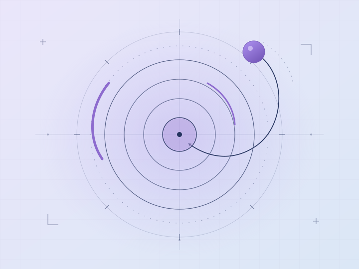
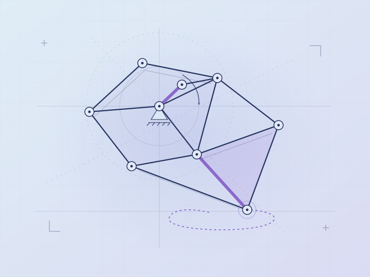
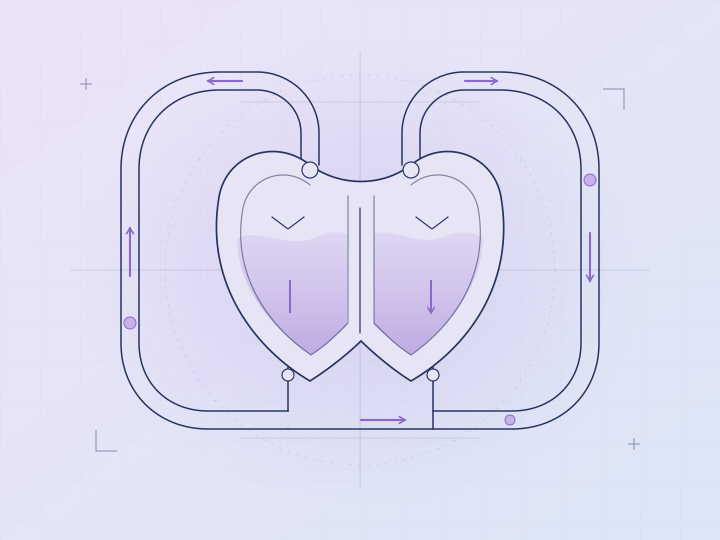

SoftwareBuilt / iterating
Drop Tap
A reaction-testing game with multiple modes, scoring, and a leaderboard.
Project overviewThe Stupid Idiots collective
We're an independent collective making room for ideas beyond the expected. Different interests, a shared curiosity, and projects we can call our own.
Browse projectsIndependent work from across the collective.

SoftwareA reaction-testing game with multiple modes, scoring, and a leaderboard.
Project overview
EngineeringExperiments with the geometry and movement of a walking mechanism.
Project overview
BiomedicalA physical model exploring pumping, circulation, and the mechanics of the heart.
Project overviewWe don't all work on the same things. What connects us is the belief that there's more to learn, make, and question than a prescribed path can contain.
About the collectiveNo posts published yet. A rough sketch, a useful discovery, or a project update — it all belongs here.
Write a post